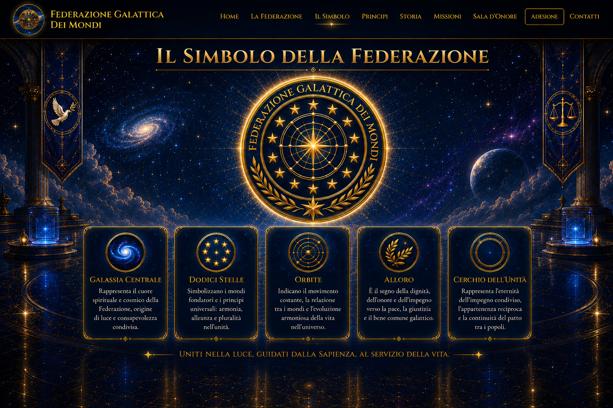

Emblema ufficiale
Un emblema di unità, luce, conoscenza e servizio alla vita, con dodici stelle nell’anello ufficiale.

Rappresenta il cuore spirituale e cosmico della Federazione, origine di luce, conoscenza e consapevolezza condivisa.
Simboleggiano i mondi fondatori e i principi universali: armonia, pluralità e unità.
Indicano il movimento costante, la relazione tra i mondi e l’evoluzione armoniosa della vita.
È il segno della dignità, dell’onore e dell’impegno verso la pace, la giustizia e il bene comune.
Rappresenta l’eternità dell’impegno condiviso e l’appartenenza reciproca tra i popoli.